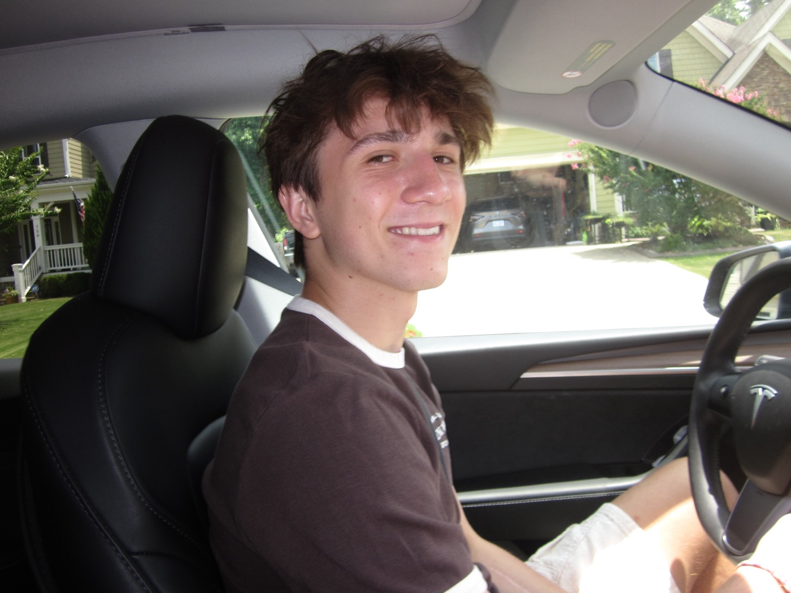
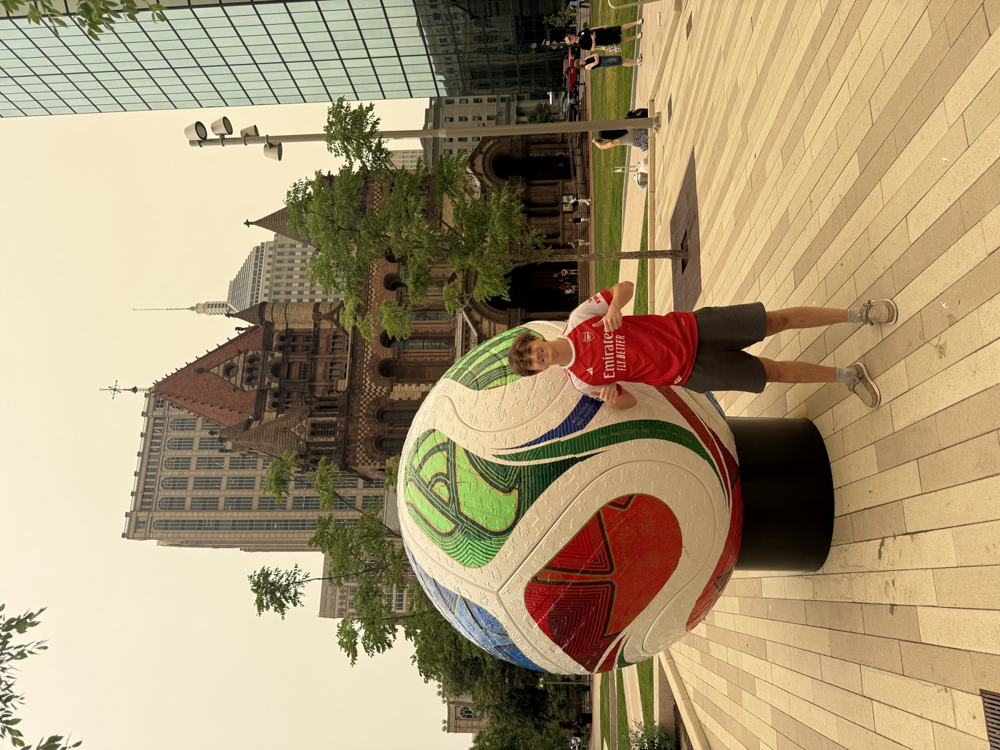
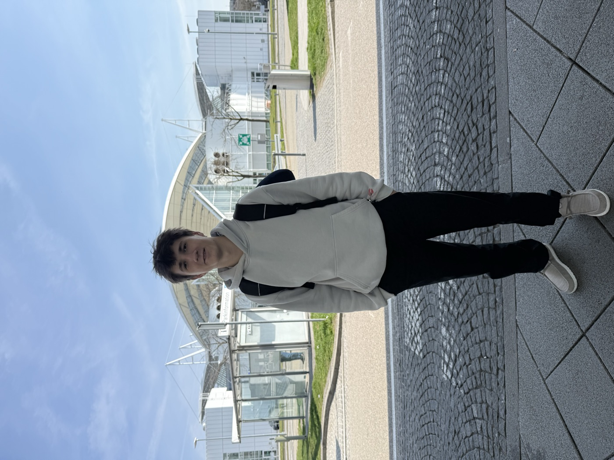
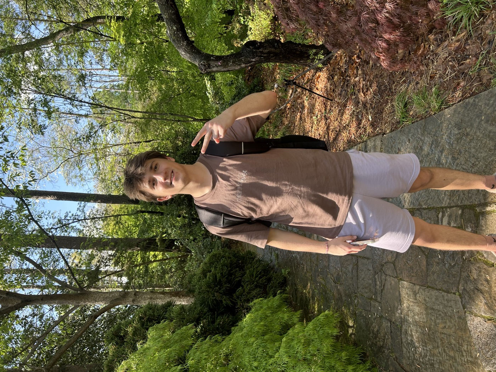
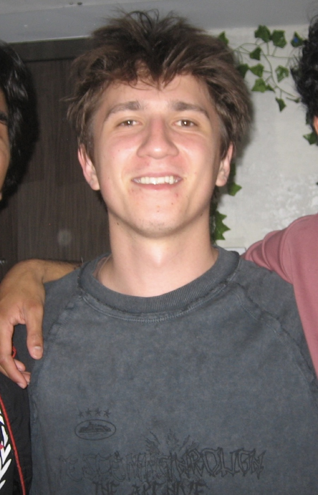

Experience · Duke Sanford School of Public Policy
Kick-off · Duke University
DmytroMarkey
I'm a second-year at Duke studying Computer Science and Economics. Away from the laptop you'll usually find me on a soccer field, at a poker table, on a trail somewhere, or out with friends.

Line-up
The starting four
What I'm doing when I'm not doing homework.




Match report
Work
Experience · SSM, marketing agency
Marketing
Research · Duke Economics Journal · under review at the World Bank
How the war in Ukraine changed the way students learn
We scraped about 775,000 Telegram messages from 109 study and comparison channels in Ukraine and Kazakhstan. Using a triple-difference design with fixed effects and bilingual Ukrainian/Russian NLP, we found that after the invasion teachers kept posting but students stopped showing up. Views took a 15.6% hit relative to the comparison channels, and the morning study routine disappeared.
- Clubs
- Duke Applied Machine Learning · 180 Degrees Consulting · Duke Club Soccer
- Coursework
- Data Structures & Algorithms · Linear Algebra · Probability · Multivariable Calculus
- Code
- Python